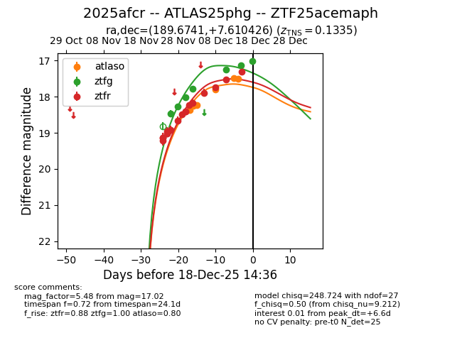
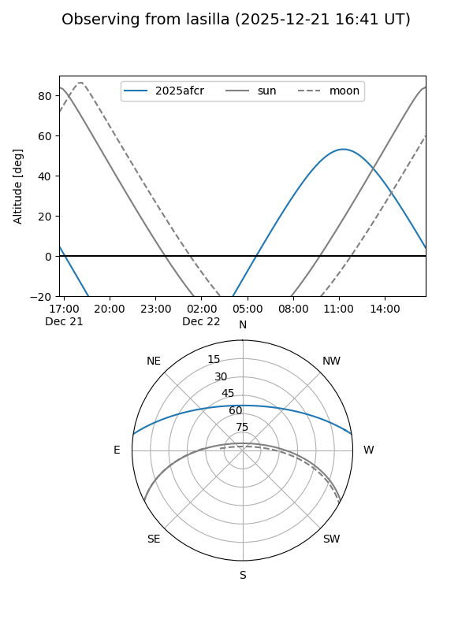
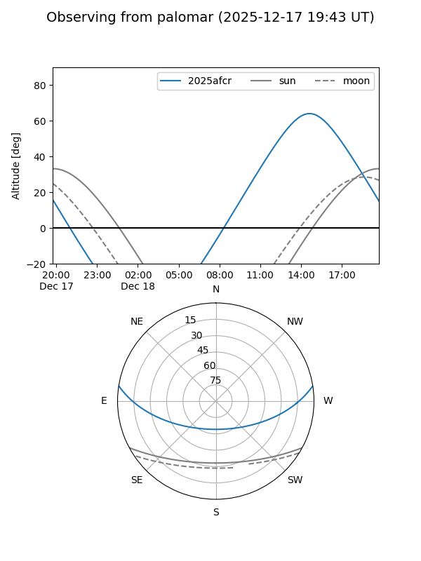
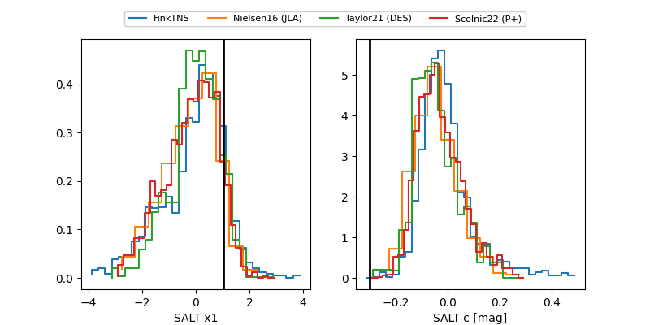

2025afcr
Target 2025afcr at 2025-12-18 15:12
Aliases and brokers:
FINK: fink-portal.org/ZTF25acemaph
Lasair: lasair-ztf.lsst.ac.uk/objects/ZTF25acemaph
ALeRCE: alerce.online/object/ZTF25acemaph
TNS: wis-tns.org/object/2025afcr
YSE: ziggy.ucolick.org/yse/transient_detail/2025afcr
alt names
ZTF25acemaph (ztf,fink_ztf)
2025afcr (tns,yse)
ATLAS25phg (atlas)
Coordinates:
equatorial (ra, dec) = 189.6741,+7.61043
equatorial (HMS+DMS) = 12:38:41.78,+07:36:37.53
galactic (l, b) = (293.5514,+70.24976)
Photometry
last atlaso=17.50, ztfg=17.02, ztfr=17.22
6 atlaso, 7 ztfg, 18 ztfr detections
Lightcurve

Visibility


Additional plots
